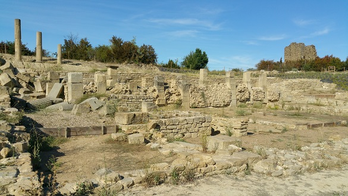

|
La Ciudad
romana de Santa Criz
En Eslava se localiza el yacimiento arqueológico
de Santa Criz. Poblado desde La Edad de Hierro, habitada por vascones,
romanos y en la Edad Media.
Es uno de yacimientos los mejor conservados de Navarra y declarado Bien
de Interés Cultural en 2016.
Desconocemos su nombre latino original.
Conocida desde 1917, la ciudad romana ha sido objeto de diversas
excavaciones especialmente entre los años 2006 a 2015.
Solo se ha excavado una mínima parte.
Podemos visitar los restos de una ciudad romana que vivió su máximo
esplendor entre los siglos I y II. Destaca la monumentalidad y
abundancia de los restos encontrados.
Tras su consolidación, podemos visitar el cripotopórtico del Foro
romano. Destacan sus tres columnas de estilo corintio, los espacios
públicos, los restos monumentales recuperados y la necrópolis. También
destacamos la muralla del oppidum vascón.
Ver
Video

|